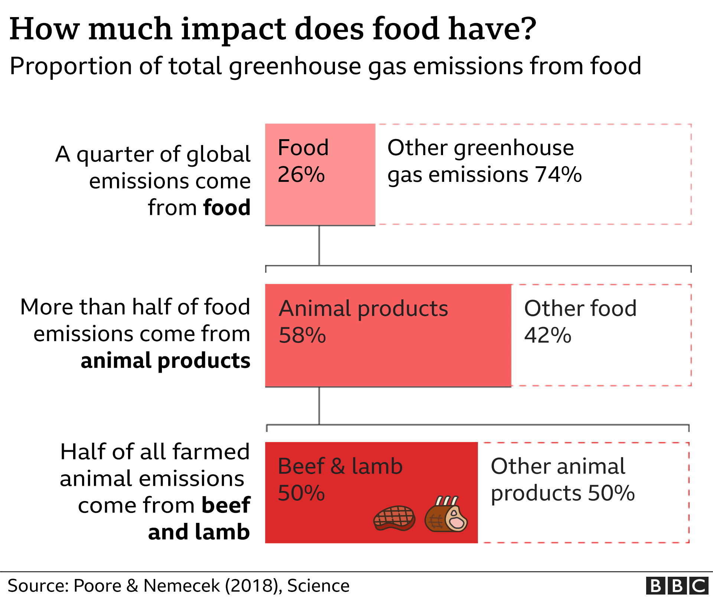
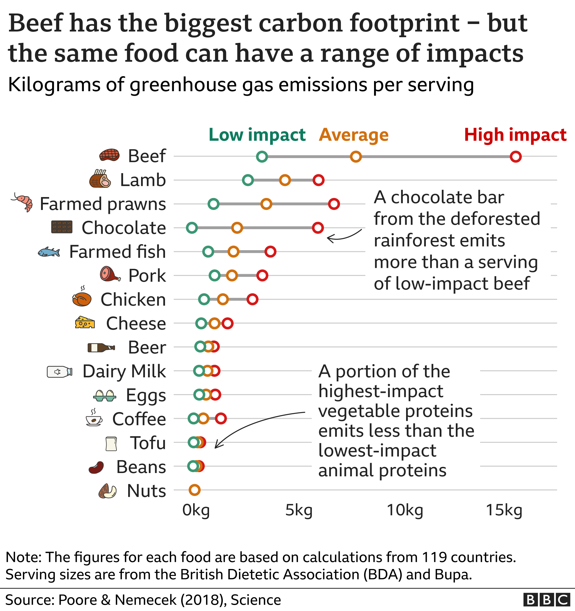
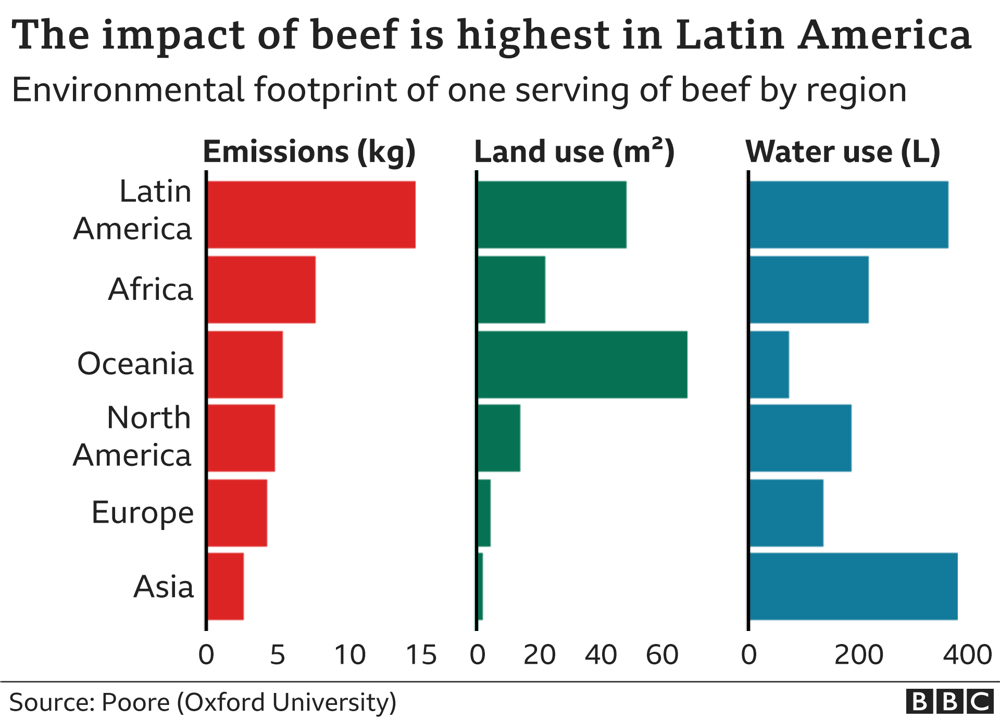

Avoiding meat and dairy products is one of the biggest ways to reduce your environmental impact, according to recent scientific studies.
Switching to a plant-based diet can help fight climate change, according to a major report by the UN's Intergovernmental Panel on Climate Change (IPCC), which says the West's high consumption of meat and dairy is fuelling global warming.
But what is the difference between beef and chicken? Does a bowl of rice produce more climate warming greenhouse gases than a plate of chips? Is wine more environmentally friendly than beer?
To find out the climate impact of what you eat and drink, choose from one of the 34 items in our calculator and pick how often you have it.
Food production is responsible for a quarter of all greenhouse gas emissions, contributing to global warming, according to a University of Oxford study.
However, the researchers found that the environmental impact of different foods varies hugely.
Their findings showed that meat and other animal products are responsible for more than half of food-related greenhouse gas emissions, despite providing only a fifth of the calories we eat and drink.
Of all the products analysed in the study, beef and lamb were found to have by far the most damaging effect on the environment.
The findings echo recommendations on how individuals can lessen climate change by the Intergovernmental Panel on Climate Change (IPCC).
When it comes to our diets, the IPCC says we need to buy less meat, milk, cheese and butter - but also eat more locally sourced seasonal food, and throw less of it away.
The IPCC also recommends that we insulate homes, take trains and buses instead of planes, and use video conferencing instead of business travel.
Cutting meat and dairy products from your diet could reduce an individual's carbon footprint from food by two-thirds, according to the Oxford study, published in the journal Science.
"What we eat is one of the most powerful drivers behind most of the world's major environmental issues, whether it's climate change or biodiversity loss," study researcher Joseph Poore told BBC News.
Changing your diet can make a big difference to your personal environmental footprint, from saving water to reducing pollution and the loss of forests, he said.
"It reduces the amount of land required to produce your food by about 75% - that's a huge reduction, particularly if you scale that up globally," Poore explained.
If you fly regularly, replacing flying with other forms of transport may have a bigger impact on your carbon footprint than changing your diet. A passenger's carbon footprint from a one-way flight from London to New York is just under half a tonne of greenhouse gases. Switching from a regular petrol vehicle to an electric car could save more than double that over a year.
Knowing how and where your food is produced is also important, as the same food can have huge differences in environmental impact.
For example, beef cattle raised on deforested land is responsible for 12 times more greenhouse gas emissions than cows reared on natural pastures.
The average beef from South America results in three times the amount of greenhouse gases as beef produced in Europe - and uses 10 times as much land.
Meat and dairy are not the only foods where the choices you make can make a big difference.
Chocolate and coffee originating from deforested rainforest produce relatively high greenhouse gases.
For climate-friendly tomatoes, choose those grown outdoors or in high-tech greenhouses, instead of in greenhouses heated by gas or oil. Environmentally-minded beer-drinkers may be interested to know that draught beer is responsible for fewer emissions than recyclable cans, or worse, glass bottles.
Even the most climate-friendly meat options still produce more greenhouse gases than vegetarian protein sources, like beans or nuts.
- Climate change: Where we are in seven charts
- Failure to tackle warming 'suicidal'
- Climate change is 'shrinking winter'
What are greenhouse gases?
The figures for greenhouse gas emissions are in kilograms of carbon dioxide equivalents (CO2eq). This is a unit that converts the impact of different kinds of greenhouse gases, like methane and nitrous oxide, to the equivalent amount of carbon dioxide.